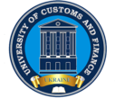

Декан факультету
Корнєєв Максим Валерійович
доктор економічних наук, професор
У складі факультету:
- МІЖКАФЕДРАЛЬНА НАВЧАЛЬНА ЛАБОРАТОРІЯ ІННОВАЦІЙНИХ ТЕХНОЛОГІЙ
- КАФЕДРА КОМП’ЮТЕРНИХ НАУК ТА ІНЖЕНЕРІЇ ПРОГРАМНОГО ЗАБЕЗПЕЧЕННЯ
- КАФЕДРА КІБЕРБЕЗПЕКИ ТА ІНФОРМАЦІЙНИХ ТЕХНОЛОГІЙ
- КАФЕДРА ТРАНСПОРТНИХ ТЕХНОЛОГІЙ ТА МІЖНАРОДНОЇ ЛОГІСТИКИ
- НАВЧАЛЬНА ЛАБОРАТОРІЯ ТРАНСПОРТНИХ СИСТЕМ ТА ТЕХНОЛОГІЙ
- КАФЕДРА ТУРИЗМУ ТА ГОТЕЛЬНО-РЕСТОРАННОЇ СПРАВИ
- МІЖКАФЕДРАЛЬНА НАВЧАЛЬНА ЛАБОРАТОРІЯ ГОТЕЛЬНО-РЕСТОРАННОЇ СПРАВИ ТА ТОВАРОЗНАВСТВА
На факультеті здійснюється підготовка за денною та заочною формами навчання за освітніми ступенями «Бакалавр» та «Магістр» за спеціальностями:
- 022 Дизайн
- 241 Готельно-ресторанна справа
- 125 Кібербезпека
- 121 Інженерія програмного забезпечення
- 122 Комп’ютерні науки
- 275 Транспортні технології
Кількість здобувачів вищої освіти на факультеті нині становить майже 1100 осіб, які мають можливість не лише навчатися, але й гармонійно розвиватися
Особлива увага на факультеті приділяється створенню умов для всебічного розвитку студентів, реалізації їх творчих здібностей.
Здобувачі вищої освіти факультету беруть активну участь у роботі наукових гуртків, діючих на кафедрах факультету, у роботі Студентського наукового товариства, у науково-дослідній діяльності - всіляких регіональних, всеукраїнських та міжнародних конкурсах, олімпіадах, науково-практичних конференціях, за результатами яких публікують свої статті в наукових виданнях, а також у культурно-масовому та спортивному житті.
Факультет інноваційних технологій - це:
- широко профільна та практична освіта, адаптованість освітнього процесу до вимог сучасного ринку праці, гнучкі навчальні програми;
- можливість проходження навчальних, виробничих та переддипломної практик у структурних підрозділах державних органів влади (митниці, ДФС, державних обласних адміністраціях тощо), компаніях, що надають митно-брокерські, логістичні та транспортно-експедиторські послуги, небанківських фінансово-кредитних установах та банках, відділах обробки інформації підприємств різних форм власності; фірмах, які займаються розробкою прикладного та програмного забезпечення; фірмах, що є провайдерами послуг Інтернет; фірмах, що надають послуги кабельного та супутникового телебачення, закладах готельно-ресторанного господарства країн світу;
- можливість стажувань за кордоном (Болгарія, Корея; Польща, Німеччина, Бразилія, Італія тощо);
- участь у програмах академічної мобільності;
- додаткова можливість вивчення іноземних мов на базі Українсько-Бразильського центру, Українсько-Арабського центру, Українсько-Болгарського бізнес центру, Українсько-Польського центру, Українсько-корейського центру, Українсько-Азербайджанського центру, Українсько-Грузинського центру, Українсько-Індійського центру, які діють при Університеті;
- можливість участі у семінарах та тренінгах у сфері обслуговування (готельно-ресторанного бізнесу), ІТ-програмування та Net-технологій, Web-технологій та Web-дизайну, транспортних систем та інтеграції України в міжнародну транспортну систему, ділових комунікацій, комп’ютерних технологій, правових та соціальних аспектів захисту інформації та криптографії, економіки та бізнесу, менеджменту у сфері інформаційної безпеки, фінансів, права.